This page brings together basic information about the Sharada script and its use for the Sanskrit and Kashmiri languages. It aims to provide a brief, descriptive summary of the modern, printed orthography and typographic features, and to advise how to write Sanskrit/Kashmiri using Unicode.
Sharada is a South Asian abugida used in India for Sanskrit and Kashmiri. After widespread use in Kashmir and neighbouring areas, it later became restricted to Kashmir, and is now rarely used, except by the Kashmiri Pandit community for religious purposes (although there is some interest in reviving it).
𑆯𑆳𑆫𑆢𑆳
Sharada was used as the principal script in Kashmir from the 8th to 20th century for Sanskrit, Kashmiri, and other languages. The script's use in inscriptions began to decline in the 19th century due to the rise of Persian and Devanagari scripts.
The name "Sharada" comes from a Sanskrit name for Kashmir or the goddess of knowledge, Sarasvatī. The name is relatively recent and also appears in various English forms.
Geographically, Sharada's core region is between longitudes 72°-78° east and latitudes 32°-36° north, with inscriptions found from Afghanistan to Uttar Pradesh.
Sharada evolved from Gupta Brahmi through the Kutila script in three stages: 8th-9th centuries, 9th-10th centuries, and 11th-13th centuries, with inscriptions and manuscripts as evidence. By the 15th century, it evolved into scripts like Takri, Landa, and Gurmukhi. Sharada's decline continued into the 19th century, with limited modern use among Kashmiri Pandits for rituals and horoscopes.
Interest in Sharada persists in the scholarly community, with efforts to preserve and study the script in India and Germany.
More information about Sharada's history and usage:
Sharada is an abugida. Consonant letters have an inherent vowel sound. Combining vowel signs are attached to the consonant to indicate that a different vowel follows the consonant. See the table in the right-hand column for a brief overview of features for the Sharada orthography.
Sharada text runs left-to-right in horizontal lines.
The basic consonant sounds of Sanskrit letters and Kashmiri are represented using consonant letters. Kashmiri uses 3 additional letters with the nukta diacritic. Kashmiri also commonly indicates palatalisation of consonants, using 𑆪𑇀.
An unusual feature is that 2 letters used to represent allophones of h in consonant clusters have to be rendered above the following consonant.
Consonant clusters (and palatalisation) are indicated using the virama between consonants. The virama is often visible, and appears alongside the preceding consonant letter, however in several cases the cluster may also be rendered as a conjunct. Conjunct forms are normally stacked.
All Sanskrit standalone vowel sounds are written using independent vowel letters. Kashmiri, however, has additional standalone vowels that are represented using other vowel signs attached to one of 3 independent vowels used as a base.
Two vowel signs and letters represent diphthongs.
Sharada has a set of 4 vocalic letters, both vowel signs and independent vowel letters.
Vowels may be nasalised, using the diacritic 𑆀, or sometimes 𑇏.
Native digits are used. Punctuation is mostly native, though some ASCII punctuation is used. There are also section end markers and head marks.
Click on the sounds to reveal locations in this document where they are mentioned.
Vowel sounds
Plain vowels
Front
Central
Back
High
iiː
ɨɨː
uuː
Mid
eeː
əəː
ooː
Low
aaː
ɔ
Diphthongs
Front
Central
Back
High
Mid
əi əu
Low
Consonant sounds
labial
dental
alveolar
post-
alveolar
retroflex
palatal
velar
glottal
stops
pb
td
ʈɖ
kɡ
aspirated
pʰ
tʰ
ʈʰ
kʰ
affricates
t͡s
t͡ʃd͡ʒ
aspirated
t͡sʰ
t͡ʃʰ
fricatives
sz
ʃ
h
nasals
m
n
approximants
w
l
j
trills/flaps
r
Kashmiri has no voiced aspirated sounds.
Bilabial
Dental
Alveolar
Retroflex
Alveolo
-palatal
Velar
Glottal
Stop /
Affricate
plain
p b
t d
ts
ʈ ɖ
tʃ dʒ
k ɡ
aspirated
pʰ
tʰ
tsʰ
ʈʰ
tʃʰ
kʰ
Fricative
s z
ʃ
h
Nasal
m
n
Approximant
l
j
w
Trill
r
Vowels
Vowel summary table
The following table summarises the main vowel to character assigments.
ⓘ represents the inherent vowel. Dependent vowels are on the left, standalone vowels on the right. Diacritics are added to the vowels to indicate nasalisation (not shown here).
The inherent vowel for Sharada consonants is a, and ka is written by simply using the consonant letter.
Vowel absence
𑇀␣𑇁␣𑇉
Sharada uses 𑇀 to indicate that there is no inherent vowel after a consonant.
The virama is typically visible in Sharada text. It is unusual in that it appears to the right of the consonant whose vowel it cancels, much like a letter.
𑆃𑆩𑇀𑆧𑆳
𑆃𑆧𑆾𑆢𑇀
However, there are some consonant clusters that are rendered as conjuncts (see clusters), and in these cases the virama is still used in the encoded sequence of characters, but is invisible when rendered.
Avagraha
𑇁␣𑇉
Sharada uses 2 characters to indicate sandhi. 𑇁 represents the elision of word-initial a, and is a spacing letter written on the baseline, but (unlike Devanagari) not joining the headstroke. 𑇉 is a combining character, written in some manuscripts below the syllable following the location of external sandhi. In some cases, it may be written twice to indicate sandhi between 2 long vowels. For examples, see Pandeypsan.
Vowels after consonants
Post-consonant vowels are written using using vowel signs. All vowel signs are combining marks. There are no multipart vowels and no circumgraphs. There is 1 pre-base vowel sign.
All vowel signs are typed and stored after the base consonant, and the rendering process puts them in the correct place for display.
Three vowel signs are spacing combining characters, meaning that they consume horizontal space when added to a base consonant.
Sanskrit vowel signs
𑆑𑆵
kiːU+11191 SHARADA LETTER KA + U+111B5 SHARADA VOWEL SIGN II
For simple Sanskrit post-consonant vowels, Kashmiri uses the following dedicated combining marks.
𑆴␣𑆶␣𑆵␣𑆷␣𑆼␣𑆾␣𑆳
Kashiri-specific vowel signs
The Kashmiri language contains a number of additional sounds that do not appear in Sanskrit. Representation of those sounds has varied in the past, but recently agreement was reached to use an additional set of vowel signs to cover them. Those vowel signs are not yet encoded in Unicode (due in version 17), and are not available in the font used for this page, but the list will be as follows. The actual shapes are shown in fig_kashmiri_vowel_signs.
␣␣␣␣␣␣␣
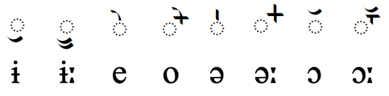
Kashmiri vowel signs.𑇋␣𑇌
Previously, other diacritics were used to help write the vowel sounds that occur in Kashmiri but not in Sanskrit. Pandey found no evidence of their use after the beginning of the 20th century. These diacritics include 𑇋 and 𑇌. For more information about them, click on their names or see Pandeypk.
Diphthongs
𑆑𑆽
kaːi̯U+11191 SHARADA LETTER KA + U+111BD SHARADA VOWEL SIGN AI
Single vowel signs are also used to write 2 diphthongs.
𑆽␣𑆿
Prishthamatra
𑇎 was used in early and medieval documents in concert with other vowel signs to write the 4 vowels e, ai, o, and au. It's use declined in the 15th century.pp
𑇎␣𑇎𑆼␣𑇎𑆳␣𑇎𑆼𑆳
Ligatures for vowel signs
Similarly to some other Indic scripts, such as Tamil, the vowel signs 𑆶ʊ, and 𑆷uː, tend to create special ligated forms with the consonant letter they follow.
See the examples just below. The first item in the list shows the default shape, where the vowel sign does not create a ligature, but behaves like other vowel signs.
A few other vowel signs exhibit similar behaviour. See the list below. (Hint: to see the original shapes of the consonants, click on the ligature.)
𑆕𑆳␣𑆘𑆳␣𑆛𑆳␣𑆟𑆳␣𑆑𑆸␣𑆑𑆹
Pre-base vowel sign
𑆑𑆴
kiU+11191: SHARADA LETTER KA + U+111B4: SHARADA VOWEL SIGN I
𑆴
The vowel sign 𑆴 appears to the left of the base consonant letter or cluster.
This is a combining mark that is always typed and stored after the base consonant(s), ie. the codepoints follow the order in which the items are pronounced. The rendering process places the glyph before the base consonant without changing the code points.
Clicking on the following word reveals that in the sequence of characters the initial vowel sound is stored after the consonant, even though it is displayed to its left.
𑆢𑆳𑆝𑆴𑆩
Vowel length
Vowel length is indicated by the vowel sign used (see combiningV and kashmiriV).
Nasalisation
𑆀␣𑇏
Nasalisation of the vowel in a syllable is generally indicated using 11180 above the vowel. An alternative shape, 111CF can also be found, and sometimes in the same manuscript. For more information see Pandey.
Standalone vowels
Sanskrit standalone vowels are written using a set of independent vowel letters. The set contains a character to represent the inherent vowel sound, and 2 letters representing diphthongs.
𑆅␣𑆇␣𑆆␣𑆈␣𑆍␣𑆏␣𑆃␣𑆃␣ ␣𑆎␣𑆐
However, the additional vowel sounds in Kashmiri are represented by 3 of the above letters combined with a vowel signs listed in kashmiriV. The following list contains the standalone vowel representations for the additional Kashmiri vowels. Rajan lists alternative base letters for ɔ and ɔː.
This section maps Kashmiri or Sanskrit vowel sounds to common graphemes in the Devanagari orthography. It shows characters used since the reforms of 2009, and ignores previous orthographies (see previousOrthographies).
Plain vowels
ɪ
vowel sign𑆴
standalone𑆅
iː
vowel sign𑆵
standalone𑆆
ɨ
vowel signUsed for extra vowels for Kashmiri.
standalone𑆃Used for extra vowels for Kashmiri.
ɨː
vowel signUsed for extra vowels for Kashmiri.
standalone𑆃Used for extra vowels for Kashmiri.
ʊ
vowel sign𑆶
standalone𑆇
uː
vowel sign𑆷
standalone𑆈
e
vowel signUsed for extra vowels for Kashmiri.
standalone𑆍Used for extra vowels for Kashmiri.
eː
vowel sign𑆼
standalone𑆍
o
vowel signUsed for extra vowels for Kashmiri.
standalone𑆏Used for extra vowels for Kashmiri.
oː
vowel sign𑆾
standalone𑆏
ə
vowel signUsed for extra vowels for Kashmiri.
standalone𑆃Used for extra vowels for Kashmiri.
əː
vowel signUsed for extra vowels for Kashmiri.
standalone𑆃Used for extra vowels for Kashmiri.
ɔ
vowel signUsed for extra vowels for Kashmiri.
standalone𑆃Used for extra vowels for Kashmiri.
ɔː
vowel signUsed for extra vowels for Kashmiri.
standalone𑆃Used for extra vowels for Kashmiri.
ɐ
inherent voweleg. 𑆑𑆤𑇀
standalone𑆃
aː
vowel sign𑆳
standalone𑆄
Diphthongs
aːi̯
vowel sign𑆽
standalone𑆎
aːu̯
vowel sign𑆿
standalone𑆐
Nasalisation
◌̃
𑆀
𑇏Alternative shape.
Vocalics
Sharada has 4 vocalic vowel signs and 4 corresponding independent vowels.
𑆸␣𑆹␣𑆺␣𑆻𑆉␣𑆊␣𑆋␣𑆌
Consonants
Consonant summary table
The following table summarises the main consonant to character assigments.
The list of sounds used for native Kashmiri words doesn't include voiced aspirated consonants and a few others. The following is likely to be a basic set for Kashmiri.
The additional consonant sounds needed for Kashmiri can be written using one of the above characters with 𑇊. These include:
𑆖𑇊␣𑆗𑇊␣𑆘𑇊
None of these combinations exist in atomic form.
Palatalisation
Palatalisation is a frequent feature of Kashmiri words. It is represented using 𑆪 as the final element of a consonant cluster.
Inside a word the YA forms a conjunct or a cluster with the preceding consonant, eg. 𑆒𑇀𑆪𑆩𑆳
At the end of a word, the YA is followed by a visible virama, eg. 𑆄𑆯𑆤𑇀𑆪𑇀
Since they are palatal sounds, the YA is not needed after the following consonants.
𑆖␣𑆗␣𑆘␣𑆙
Raised letters
Two letters representing allophonic variants of h in consonant clusters require special handling. In both cases, the letter is rendered above the following consonant letter. Although the standalone rendering of these characters looks like a combining mark, both actually have a General Category value of letter.
𑇂␣𑇃
𑇂 represents the sound x before k or kʰ.
𑇃 represents the sound ɸ before p or pʰ.
Grapheme clusters do not separate the 2 letters in these sequences.
The placement of certain vowel signs in the Noto Sans Sharada font marks these combinations out as different from normal conjuncts, since the jihvamuliya is sometimes separated above the vowel-sign. See the the first two examples in the list below. Similar placement occurs for upadhmaniya, too.
𑇂𑆑𑆴␣𑇂𑆑𑆵␣𑇂𑆑𑆼␣𑇂𑆑𑆾
Onsets
Clusters of consonant letters at the beginning of an orthographic syllable are handled as described in the section clusters.
Finals
Wiktionary data shows some words that end with a consonant letter and a following virama (link), but other words that end without the virama (link).
Sharada also has 2 dedicated characters for syllable codas.
𑆁␣𑆂
11181 represents a nasal that is homorganic with a following consonant. It is positioned over the previous consonant or vowel sign.
𑆒𑆁𑆖𑇊
𑆃𑆁𑆘𑇊
Observation: When using the Devanagari script, the visarga is not used in Kashmiri. That may also be the case for Sharada. Research needed.
Consonant clusters
Sharada commonly uses a visible 𑇀 between consonant letters to indicate an absence of the inherent vowel. The description in the Unicode Standardu only mentions this approach.
𑆃𑆩𑇀𑆧𑆳
However, in a number of cases, consonant clusters are stacked and the virama is hidden, eg.
𑆑𑆢𑇀𑆪
𑆠𑇀𑆫𑆜𑇀
The Noto Sans Sharada font currently shows the following combinations of CvC as stacked. The other combinations have a visible virama.
Pandey's proposal documentp,41-42 contain a list of many more conjuncts on pages 41–42, including a number of 3 consonant conjuncts.
Consonant length
Gemination and consonant lengthening are handled using the normal approach to consonant clusters (see clusters).
Consonant sounds to characters
This section maps Kashmiri/Sanskrit consonant sounds to common graphemes in the Sharada orthography.
Sounds listed as 'infrequent' are allophones, or sounds used for foreign words, etc. Light coloured characters occur infrequently.
p
𑆥
pʱ
𑆦
b
𑆧
bʱ
𑆨Not used for native Kashmiri.
t
𑆠
tʰ
𑆡
t͡s
𑆖𑇊For Kashmiri.
t͡ɕ
𑆖
t͡ɕʰ
𑆗
d
𑆢
dʱ
𑆣Not used for native Kashmiri.
d͡ʑ
𑆘
d͡ʑʱ
𑆙Not used for native Kashmiri.
ʈ
𑆛
ʈʰ
𑆜
ɖ
𑆝
ɖʱ
𑆞Not used for native Kashmiri.
k
𑆑
kʰ
𑆒
ɡ
𑆓
ɡʱ
𑆔Not used for native Kashmiri.
ɸ
𑇃An allophone of h. Only found in the combinations ɸp or ɸpʰ.
s
𑆱
ɕ
𑆯
ʂ
𑆰Not used for native Kashmiri.
z
𑆘𑇊For Kashmiri.
x
𑇂An allophone of h. Only found in the combinations xk or xkʰ.
ɦ
𑆲
m
𑆩
𑆁Coda.
n
𑆤
𑆁Coda.
ɲ
𑆚
ɳ
𑆟Not used for native Kashmiri.
ŋ
𑆕
ʋ
𑆮
r
𑆫
ɽ
𑆫
l
𑆬
ɭ
𑆭
j
𑆪
Vocalics
r̩
vowel sign𑆸
standalone𑆉
r̩ː
vowel sign𑆹
standalone𑆊
l̩
vowel sign𑆺
standalone𑆋
l̩ː
vowel sign𑆻
standalone𑆌
Other features
Symbols
The Sharada Unicode block contains an atomic character to represent OM, 𑇄, but recommends that a decomposed sequence be used, instead, ie. 𑆏𑆀. The atomic character and the sequence are not canonically equivalent.
It is also possible to find the sequence 𑆏𑇏 as a spelling for OM.
Encoding choices
This section offers advice about characters or character sequences to avoid, and what to use instead. It takes into account the relevance of Unicode Normalisation Form D (NFD) and Unicode Normalisation Form C (NFC)..
Although usage is recommended here, content authors may well be unaware of such recommendations. Therefore, applications should look out for the non-recommended approach and treat it the same as the recommended approach wherever possible.
Confusables & spelling errors
This table lists characters that are often mistakenly used because they look the same as or similar to other code points that should be used, or perhaps because the correct character is not available on the user's keyboard.
Correct
Incorrect
Notes
𑆏𑆀
𑇄
Not canonically equivalent. Atomic character deprecated by the Unicode Standard.
False friends
The following atomic characters look as if they could be composed of parts, but in fact there is no equivalence during normalisation, and so the atomic characters only should be used.
Atomic
Sequence ( DO NOT use! )
𑆎
𑆍𑆼
Codepoint sequences
Combining marks always follow the based character.
Numbers, dates, currency, etc
Sharada has a set of native digits, as follows:
𑇐␣𑇑␣𑇒␣𑇓␣𑇔␣𑇕␣𑇖␣𑇗␣𑇘␣𑇙
Text direction
Text in the Sharada script runs left to right in horizontal lines.
Most consonants have a headstroke. In some cases all headstrokes in a word join (like in Devanagari), but Pandey describes other approaches where Sharada consonant headstrokes may join only with dependent vowel signs, or may join in an arbitrary fashion.p,18 The examples just below (using the Noto Sans Sharada font) are of the second type. The gaps probably make it easier to read text such as in the first example below, because Sharada has a number of vertical lines that could be confused.
𑆯𑇀𑆮𑆒𑆶𑆫
𑆑𑆳𑆯𑆶𑆫𑇀
Alignment of the top bar may be appropriate when mixing text of different sizes (see initials). Also, when Sharada text is mixed with another script that also has a top bar, such as Devanagari, the top bars of both scripts may need to be aligned.
𑇜 is a headstroke continuation mark that is used to join letters across imperfections in the writing surface, such as are found in birch-bark manuscripts.ph It does not appear to be used for indicating gaps and omissions.
Context-based shaping & positioning
Context-based shaping
Context-sensitive shaping is required in a number of cases for Sharada. These include the following:
The vowel signs 𑆶 and 𑆷 have special, ligated forms when used with certain consonants. See uLigatures.
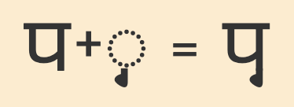
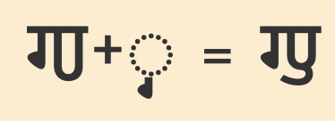
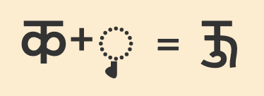
Examples of default vs. ligated forms of the U vowel sign.
Certain consonant clusters are indicated by stacking the consonant glyphs and hiding the virama. See clusters.
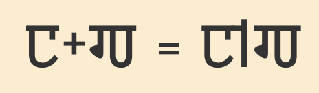
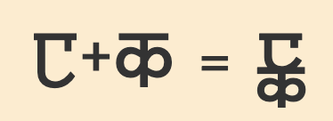
Examples of stacked and unstacked consonant clusters.
Context-based positioning
Combining characters need to be placed in different positions, according to the context. Examples include the following.
The placement of a diacritic, such as 𑆶, depends on the shape of the base letter to which it is attached.
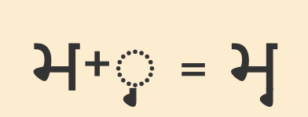
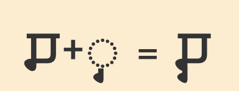
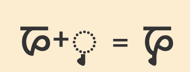
Examples of positioning of the U vowel sign.
Especially when multiple marks are attached to the same base character, the position of diacritics such as 11180 and 11181 needs to vary in order to avoid collisions.
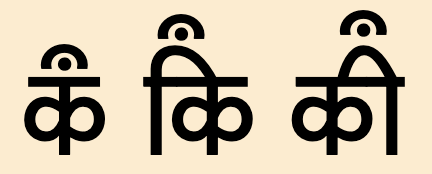
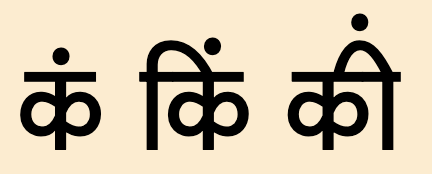
Examples of positioning of the candrabindu and bindu diacritics.
Typographic units
Word boundaries
In modern Sharada texts word boundaries are indicated by spaces. However, in some manuscripts a punctuation mark was used instead, though not always consistently, to mark word boundaries. For this, Unicode provides the 𑇈. Pandey provides an example of usage.p,21
Graphemes
tbd
Punctuation & inline features
Phrase & section boundaries
,␣𑇅␣?␣𑇆␣𑇞␣𑇞␣𑇍
Sharada uses dandas, and more modern texts use some Latin punctuation.
The following punctuation characters have been spotted while researching Sharada text.
phrase
,
sentence
𑇅
?
paragraph
𑇆
section
𑇞
𑇟
𑇍
𑇞 and 𑇟 are used to indicate the end of a section of text. For examples of usage see Pandey.
𑇍 is a sutra end mark, used in ancient manuscripts, especially the Bakhshali Manuscript (2nd-4th centuries CE) to indicate the end of a sutra, or 'rule'.psut
Head marks
𑇛␣𑇚
𑇛 is an opening head mark. The shape may vary. Pandey describes this as used in Sharada records. It represents Sanskrit salutory phrases, such as oṃ ‘Om!’, siddham ‘established!’, and svasti ‘hail!’. It appears frequently in Sharada inscriptions..psid
𑇚 is an invocation sign, used at the beginning of texts to represent the Sanskrit word 𑆍𑆑𑆁 eːkɐm one. It is also used in salutory phrases such as oṃ svasti ekaṃ siddhaṃ, meaning Om hail! One established..pe
Quotations & citations
The following characters have been attested during research into Sharada texts. More characters may be relevant here.
«␣»
start
end
initial
«
»
Abbreviation, ellipsis & repetition
𑇇 in the Sharada Unicode block is commonly used for abbreviationsp,21. For example:
𑆮𑆴𑇇𑆱𑇇 𑇑𑇐
Line & paragraph layout
Line breaking & hyphenation
Modern Sharada is normally wrapped at word boundaries.
Reproduction of archaic manuscripts which do not have spaces between words will need to break after 𑇈 or 𑇝.
In-word line-breaks
𑇝
Authors may use 𑇝 where a word is broken at the end of a line, but it is neither automatic nor consistent; it is only used if the author wishes to mark a particular break.pcon